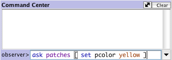
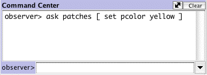
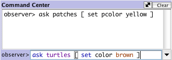
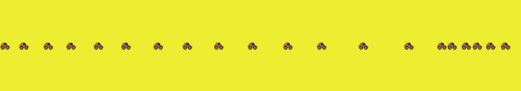
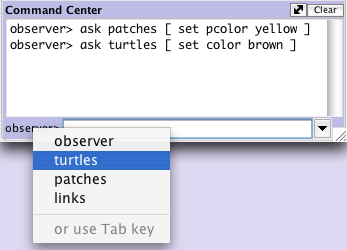
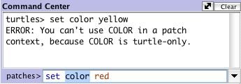
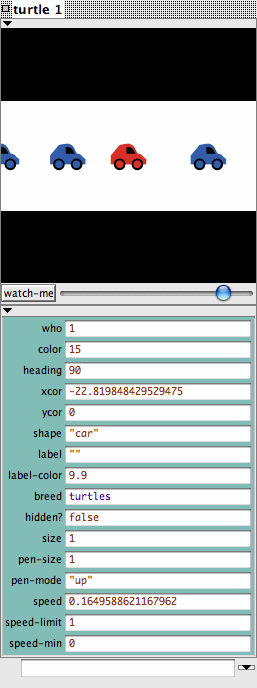
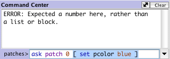
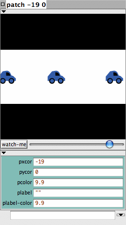

![[color chart]](images/colors.jpg)
在教学#1,你有机会查看了一些 NetLogo 模型,我们引导你打开、运行模型、按下按钮、 改变滑动条和开关值,以及使用绘图和监视器从模型收集信息。
在这一部分,焦点从观察模型转换到操纵模型。你将开始看模型的内部运转,能够改变它们的样子。
- 到模型库去 (File 菜单)。
- 在"Social Science"部分,找到并打开 Traffic Basic。
- 运行模型两分钟,感受一下。
- 如果有什么问题,去信息标签页查查。
在这个模型里,你会注意到一系列蓝车里有一辆红车,车流同向移动。这些车时不时的 会挤成一堆,无法移动。这是关于幽灵式阻塞的模型,即有时交通流会出现阻塞,但却找不 到任何明显的原因,例如事故、断桥、侧翻的卡车等。要形成交通阻塞,没有“明显原因” (centralized cause)是需要的。
你可以改变配置运行几次,对模型有个全面理解。
当你使用这个 Traffic Basic 模型时,有没有注意到需要给模型增加什么?
看看这个模型,你会注意到环境太简单了,就是黑色背景、白色街道、一些蓝车和一辆 红车。需要对模型做点改变:改变车的形状和颜色、加上房子或路灯、新建信号灯、或者再 创建一条车道。这些建议有些是装饰性的,只是改善模型的观感,另外一些是行为性的。在 本教程里我们主要关注较简单的、装饰性的改变。 (教程 #3入介绍行为性改变,那需要 在 Procedures 页面中进行修改。)
我们使用命令中心做这些简单改变。
命令中心位于Interface Tab页,在这里你可以向模型发出命令或指令。命令就是你可以 发给NetLogo主体(海龟、瓦片、链、观察者)的指示。
在 Traffic Basic 中:
- 按下"setup" 按钮
- 找到命令中心
- 在命令中心底部的白框里按一下鼠标
- 输入下面所示文本：

- 按回车键。
视图发生什么变化？
你注意到视图背景变成了黄色,街道消失了。
为什么车没有变成黄色?
回头看看刚才输入的命令,我们只是请求瓦片改变颜色。在这个模型里,车辆用另外一 种称为”海龟”的主体表示。因此车辆并没有接收指令,也就没有改变。
命令中心发生了什么?
你可能没注意到你刚才输入的命令现在显示在命令中心的中间部分白框里,就像下面这样:

- 在命令中心底部的白框中输入下面的文本:

结果和你想的一样吗?
视图里是黄色背景,中间是一串灰色的车:

NetLogo是由海龟、瓦片和观察者组成的二维世界。瓦片构成背景,海龟在背景上移动, 观察者(observer)是观察着所有事情的一个主体。(关于世界的细节,参考 NetLogo编程指南 NetLogo Programming Guide。)
在命令中心,我们可以给海龟、瓦片和观察者发出命令。我们通过命令中心左下角的弹 出式菜单进行选择,也可以用 Tab 键在选项之间循环。
- 在命令中心,单击左下角的"observer>":

- 在弹出菜单中选 "turtles"
- 输入set color pink 回车。
- 按下 tab 键直到在左下角看到"patches>"。
- 输入set pcolor white回车。
现在视图看起来怎么样?
你注意到这两条命令和前面的 observer 命令的区别了吗?
观察者(observer)俯视着世界,因此使用ask向瓦片或海龟发出命令。正如第一个例 子那样(observer> ask patches [set pcolor yellow]),observer必须请求(ask)瓦片把 它的颜色pcolor设为黄色。但在第二个例子中,命令直接发给了一组主体(patches> set pcolor white),你只需直接给出命令。
- 按下"setup"。
发生什么?
为什么视图变回了原样,还是黑背景白路?因为按下"setup"后,模型重新按例程页中 的内容配置模型。命令中心一般不用来对模型做永久性修改,而是用来对当前模型进行定制, 让你能操纵模型,回答探究模型时冒出来的“what if”问题。(例程页(Procedures tab) 在下个教学里解释,也可参考编程指南 Programming Guide。)
我们已熟悉了命令中心,再看看 NetLogo 中关于颜色的一些细节。
你可能注意到在上面我们使用了两个不同的词来改变颜色: color 和pcolor。
color 与 pcolor 有何区别?
- 在命令中心的弹出菜单中选 "turtles" (或使用 tab 键)。
- 输入set color blue 回车。
车辆发生什么变化?
思考一下你做了什么让车变成了蓝色,试试把瓦片变成红色。
如果想让瓦片变成红色,出现一条错误信息:

- 输入 set pcolor red回车。
color 和 pcolor 是变量(variables)。有些命令和变量是海龟专用的,有些是瓦片专用 的。例如, color 是一个海龟变量,而 pcolor 是一个瓦片变量。
继续尝试,使用 set 命令和这两个变量改变海龟和瓦片颜色。
为了能对海龟和瓦片做更多的颜色改变,也就是车辆和背景,我们需要了解 NetLogo 如何处理颜色。
在 NetLogo 所有颜色对应一个数值。在这些练习里我们使用了颜色名,只是因为 NetLogo 认识16个不同的颜色名。这并不意味NetLogo只能分辨16种颜色,这些颜色之间的中间色 也可使用。下面是 NetLogo 颜色空间的一张图:
为得到一个没有名字的颜色,你需要使用一个数值,或者在颜色名上加上或减去一个数。 例如,输入set color red与输入set color 15效果完全一样。要得到一个更浅或更深的颜 色,只需使用一个比该颜色更小或更大的一个数。如下所示:
- 在命令中心的弹出菜单选 "patches" (或使用 tab 键).
- 输入set pcolor red - 2 ( "-" 两侧的空格很重要。)
通过在 red 上减去一个数, 得到更深的颜色。
- Type set pcolor red + 2
通过在 red 上加上一个数, 得到更浅的颜色。
图上任何颜色均可采用这种方法。
上面我们使用set命令改变所有车辆的颜色。你是否记得,最初的模型中一群蓝车里有一辆红车。现在看看怎样只改变一辆车的颜色。
- 按下 "setup" 让红车再次出现。
- 如果使用 Macintosh,按下 Ctrl 在红车上单击。其他操作系统的话,在红车上右击。
- 如果有别的海龟与红车太近,你可能看到在菜单底部列出多个海龟。将鼠标移动到 海龟菜单项上,注意到菜单和视图中海龟都加亮了。在红色海龟项的子菜单中选 "inspect turtle"。
关于那辆车的一个海龟监视器出现了:

仔细看看海龟监视器,可以看到属于红车的所有变量。变量是存储数值的,可以改变。 还记得我们说过颜色在计算机里都是用数字表示的吗?对主体也一样。例如,每个主体都有 一个 ID 号,叫做"who number"。
再看看海龟监视器：
海龟的 who number 是多少?
海龟颜色是什么?
海龟形状是什么?
这个监视器显示该海龟的 who number 是 0,颜色 15(红色),形状是“ car”。
除了右击(mac 上是Ctrl+单击)外,还有两个方法打开海龟监视器。方法 1 是从Tools 菜单选择"Turtle Monitor",然后在“who”域中输入要查看的海龟的ID,回车。另一种方 法是在命令中心输入inspect turtle 0(或其他ID)。
要关闭海龟监视器,只需在窗口左上角关闭标志( Mac)或右上角关闭标志(其 他操作系统)上单击。
现在了解了主体监视器,有三种方式改变一个海龟的颜色。
第一种是使用主体监视器底部的主体命令器(Agent Commander)。在这输入命令,就像在命令中心一样,只是在这输入的命令只由这个海龟执行。
- 在海龟 0 主体监视器中的主体命令器 中输入 set color pink。
视图发生什么变化?
海龟监视器有什么变化吗?
第二种是直接改变海龟监视器中的 color 变量
- 在海龟监视器中选择 "color" 右侧的文本。
- 输入新颜色,如 green + 2。
发生什么?
第三种是使用观察者(observer)改变海龟或瓦片的颜色。因为 observer 俯视着 NetLogo 世界,它可以发出命令,影响单个或一组海龟。
- 在命令中心的弹出菜单,选择 "observer" (或使用 tab 键)。
- 输入ask turtle 0 [set color blue] 回车。
发生什么?
除了海龟监视器(Turtle Monitors),也有瓦片监视器(Patch Monitors)。 瓦片监 视器与海龟监视器很相似。
你能使用瓦片监视器改变单个瓦片的颜色吗?
如果你让观察者(observer )请求瓦片 0 改变颜色(ask patch 0 [set pcolor blue]),会出现一条错误信息：

要让某个海龟做什么,我们使用 who number。但瓦片没有 who number,需要其他方法。
记住,瓦片存在于一个坐标系统中。要在图上画个点需要两个数:x 坐标和 y 坐标。瓦片的定位方式与此相同。
- 发生什么?

监视器表明这个瓦片的 pxcor 变量是-19 pycor 是 0。在坐标平面上,这个点处于 左下象限。
使用坐标让这个特定的瓦片改变颜色：
- 在瓦片监视器的底部,输入set pcolor blue,回车。
在海龟或瓦片的监视器中输入命令只对这个海龟或瓦片管用。
在命令中心也可操作单个瓦片:
- 在命令中心输入ask patch -19 0 [set pcolor green] ,回车and press return.
此时也许你想打开模型库的其他模型,试试刚学的这些技术。
在教程l #3: 例程 你将学习怎样替换、修改已有模型,或构建自己的模型。